Pensando hoje o futuro de Minas Gerais
O Projeto Minas 2035 nasceu da ideia de reunir conhecimento, experiências e estudos capazes de estimular reflexões sobre o desenvolvimento econômico, social, científico e tecnológico de Minas Gerais.
Mais do que apresentar respostas prontas, a plataforma busca organizar perguntas importantes:
Estas páginas reúnem ideias abertas à discussão, fundamentadas em planejamento de longo prazo e inspiradas em experiências nacionais e internacionais. O objetivo é construir conhecimento.
As ideias apresentadas procuram dialogar com dados, pesquisas e experiências práticas.
Grandes transformações exigem continuidade e visão estratégica.
Cada região possui características próprias que merecem soluções específicas.
Educação, ciência e tecnologia são pilares para o desenvolvimento sustentável.
O crescimento econômico depende da capacidade de criar novas soluções.
O desenvolvimento deve refletir na melhoria das condições de vida das pessoas.
Conhecimento
↓
Pesquisa
↓
Inovação
↓
Empresas
↓
Empregos
↓
Renda
↓
Qualidade de Vida
↓
Mais Educação
↓
Mais Conhecimento
Projeto Minas 2035
│
├── Economia
├── Educação
├── Saúde
├── Tecnologia
├── Indústria
├── Agricultura
├── Infraestrutura
├── Ciência
├── Trabalho
├── Governo Digital
└── Desenvolvimento Regional
“Toda grande transformação começa como uma ideia.”
O Projeto Minas 2035 não pretende apresentar verdades definitivas. Seu propósito é reunir propostas, experiências, pesquisas e cenários que possam inspirar discussões qualificadas sobre o futuro de Minas Gerais.
As ideias aqui publicadas são convites ao diálogo, ao aperfeiçoamento e à construção coletiva.